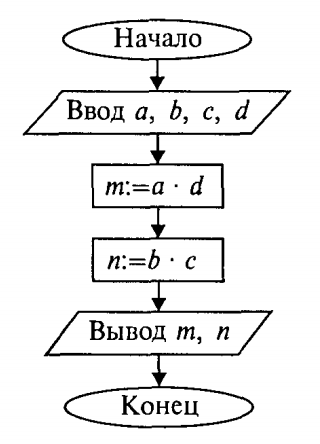
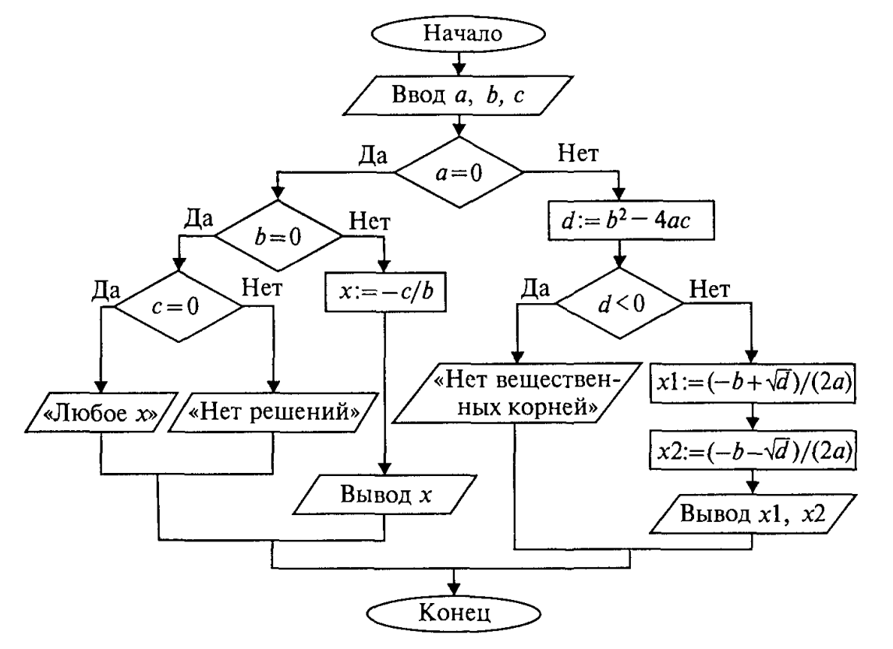
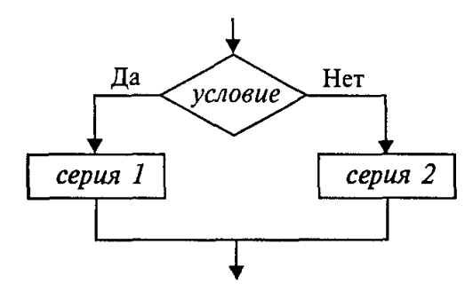
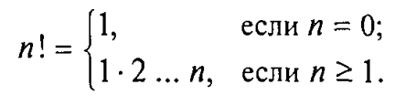
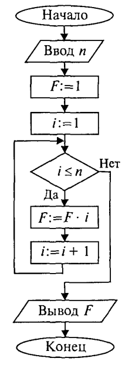
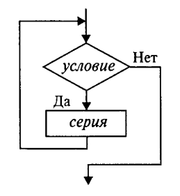
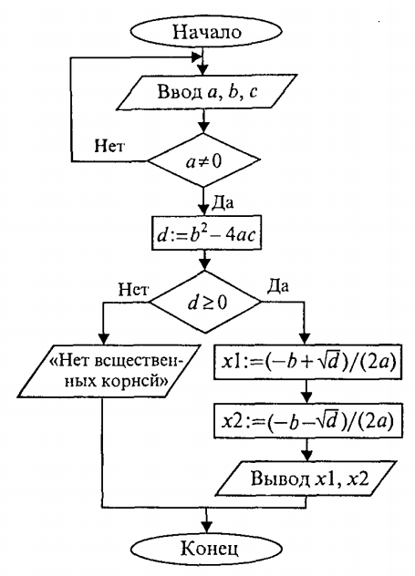
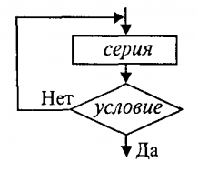
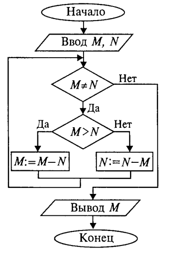
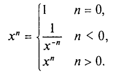

Лекция 2. Основные алгоритмические конструкции (Algorithmic Constructs)¶
Алгоритм применительно к вычислительной машине — точное предписание, то есть набор операций и правил их чередования, при помощи которого, начиная с некоторых исходных данных, можно решить любую задачу фиксированного типа.
Алгоритмы в зависимости от цели, начальных условий задачи, путей её решения, определения действий исполнителя подразделяются следующим образом:
- Линейный алгоритм — набор команд, выполняемых последовательно друг за другом.
- Разветвляющийся алгоритм — алгоритм, содержащий хотя бы одно условие, в результате проверки которого выполняется один из двух возможных шагов.
- Циклический алгоритм — алгоритм, предусматривающий многократное повторение одной и той же последовательности действий над новыми исходными данными.
Линейные алгоритмы¶
Основным элементарным действием в линейных алгоритмах является присваивание значения переменной величине. Если значение константы определено видом её записи, то переменная величина получает конкретное значение только в результате присваивания. Присваивание может осуществляться двумя способами: с помощью команды присваивания и с помощью команды ввода.
Рассмотрим пример. В школьном учебнике математики правила деления обыкновенных дробей описаны так:
- Числитель первой дроби умножить на знаменатель второй.
- Знаменатель первой дроби умножить на числитель второй.
- Записать дробь, числитель которой — результат пункта 1, а знаменатель — пункта 2.
В алгебраической форме это выглядит так:
Построим алгоритм деления дробей для ЭВМ. Сохраним те же обозначения переменных. Исходные данные — целочисленные переменные a, b, c, d. Результат — целые величины m и n.

Команда присваивания¶
Формат команды присваивания:
Знак := в псевдокоде читается как «присвоить» (в Python и Go используется =, причём в Go объявление с инициализацией — :=).
Команда присваивания обозначает следующие действия:
- Вычисляется выражение.
- Полученное значение присваивается переменной.
В описаниях алгоритмов необязательно соблюдать строгие правила записи выражений — их можно писать в обычной математической форме. Это ещё не язык программирования со строгим синтаксисом.
Команды ввода и вывода¶
Кроме присваивания, для получения данных извне и вывода результатов используются команды ввода и вывода. При выполнении команды ввода процессор прерывает работу и ожидает действий пользователя — обычно ввода значений с клавиатуры. Команда вывода направляет результаты на экран или другое устройство.
Обычно с помощью команды ввода присваиваются значения исходных данных, а команда присваивания используется для получения промежуточных и конечных величин.
Свойства команды присваивания¶
Рассмотрим последовательное выполнение четырёх команд:
| Команда | a | b |
|---|---|---|
a := 1 |
1 | — |
b := a*2 |
1 | 2 |
a := b |
2 | 2 |
b := a+b |
2 | 4 |
Этот пример иллюстрирует три основных свойства команды присваивания:
- пока переменной не присвоено значение, она остаётся неопределённой;
- значение, присвоенное переменной, сохраняется в ней вплоть до выполнения следующей команды присваивания этой переменной;
- новое значение, присваиваемое переменной, заменяет её предыдущее значение.
Обмен значениями двух переменных¶
Даны две величины: X и Y. Требуется произвести между ними обмен значениями. Например, если первоначально X = 1, Y = 2, то после обмена должно стать X = 2, Y = 1.
Хорошая аналогия — два стакана: один с молоком, другой с водой. Чтобы обменять содержимое, нужен третий пустой стакан. Аналогично для обмена значениями двух переменных нужна третья переменная Z:
| Команда | X | Y | Z |
|---|---|---|---|
| ввод X, Y | 1 | 2 | — |
Z := X |
1 | 2 | 1 |
X := Y |
2 | 2 | 1 |
Y := Z |
2 | 1 | 1 |
В Python и Go обмен можно сделать и без вспомогательной переменной — через множественное присваивание:
Разветвляющиеся алгоритмы¶
Составим алгоритм решения квадратного уравнения \(a x^2 + b x + c = 0\). Исходные данные — коэффициенты \(a\), \(b\), \(c\). Решением в общем случае будут два корня \(x_1\) и \(x_2\), которые вычисляются по формуле:
«Наивная» реализация выглядит так:
Слабость такого алгоритма видна невооружённым глазом — он не обладает важнейшим свойством качественного алгоритма: универсальностью по отношению к исходным данным. Какими бы ни были значения исходных данных, алгоритм должен приводить к определённому результату и завершать работу. Результатом может быть число или сообщение о том, что задача решения не имеет.
Чтобы построить универсальный алгоритм, требуется тщательно проанализировать математическое содержание задачи. Решение зависит от значений коэффициентов:
- если
a = 0, b = 0, c = 0— любоеxрешение; - если
a = 0, b = 0, c ≠ 0— действительных решений нет; - если
a = 0, b ≠ 0— линейное уравнение, одно решениеx = −c/b; - если
a ≠ 0иD = b² − 4ac ≥ 0— два вещественных корня; - если
a ≠ 0иD < 0— вещественных корней нет.

import math
a, b, c = map(float, input().split())
if a == 0:
if b == 0:
if c == 0:
print('любое X')
else:
print('нет решений')
else:
print(-c / b)
else:
d = b * b - 4 * a * c
if d < 0:
print('нет вещественных корней')
else:
x1 = (-b + math.sqrt(d)) / (2 * a)
x2 = (-b - math.sqrt(d)) / (2 * a)
print(x1, x2)
var a, b, c float64
fmt.Scan(&a, &b, &c)
switch {
case a == 0 && b == 0 && c == 0:
fmt.Println("любое X")
case a == 0 && b == 0:
fmt.Println("нет решений")
case a == 0:
fmt.Println(-c / b)
default:
d := b*b - 4*a*c
if d < 0 {
fmt.Println("нет вещественных корней")
} else {
x1 := (-b + math.Sqrt(d)) / (2 * a)
x2 := (-b - math.Sqrt(d)) / (2 * a)
fmt.Println(x1, x2)
}
}
В этом алгоритме многократно использована структурная команда ветвления:

Общий вид команды ветвления в псевдокоде:
Вначале проверяется условие. Если оно истинно, выполняется серия 1 (положительная ветвь). В противном случае выполняется серия 2 (отрицательная ветвь). Если на ветвях одного ветвления содержатся другие ветвления, такой алгоритм имеет структуру вложенных ветвлений.
Циклические алгоритмы¶
Цикл с предусловием (while)¶
Рассмотрим следующую задачу: дано целое положительное число n. Требуется вычислить n! (факториал):

Используются три переменные целого типа: n — аргумент; i — промежуточная переменная; F — результат.

Для проверки правильности алгоритма построена трассировочная таблица для случая n = 3:
| Шаг | n | F | i | Условие |
|---|---|---|---|---|
| 1 | 3 | |||
| 2 | 1 | |||
| 3 | 1 | |||
| 4 | 1≤3, да | |||
| 5 | 1 | |||
| 6 | 2 | |||
| 7 | 2≤3, да | |||
| 8 | 2 | |||
| 9 | 3 | |||
| 10 | 3≤3, да | |||
| 11 | 6 | |||
| 12 | 4 | |||
| 13 | 4≤3, нет | |||
| 14 | вывод |
Алгоритм имеет циклическую структуру. Использована структурная команда «цикл-пока», или цикл с предусловием. Общий вид в блок-схеме:

Выполнение тела цикла повторяется, пока условие истинно. Когда условие становится ложным, цикл заканчивает работу.
Цикл с постусловием (do-while)¶
Цикл с предусловием — основная, но не единственная форма организации циклических алгоритмов. Другой вариант — цикл с постусловием. Вернёмся к алгоритму решения квадратного уравнения: если a = 0, это уже не квадратное уравнение. Будем считать, что пользователь ошибся при вводе, и предложим ему повторить ввод. Наличие такого контроля — признак хорошего качества программы.

В Python и Go нет отдельной синтаксической формы
repeat ... until/do ... while— её эмулируют через бесконечный цикл сbreakпо условию.
Общий вид цикла с постусловием (он же «цикл-до»):

Используется условие окончания цикла. Когда оно становится истинным, цикл завершается. В отличие от цикла с предусловием, тело цикла с постусловием гарантированно выполняется хотя бы один раз.
Цикл с вложенным ветвлением — алгоритм Евклида¶
Даны два натуральных числа M и N. Требуется вычислить их наибольший общий делитель — НОД(M, N).
Эта задача решается алгоритмом Евклида. Его идея основана на свойстве: если M > N, то НОД(M, N) = НОД(M − N, N). Другой факт, лежащий в основе алгоритма: НОД(M, M) = M.
Для «ручного» выполнения алгоритм можно описать так:
- Если числа равны, взять их общее значение в качестве ответа; иначе продолжить.
- Определить большее из чисел.
- Заменить большее число разностью большего и меньшего.
- Вернуться к выполнению пункта 1.

Алгоритм имеет структуру цикла с вложенным ветвлением. Проделайте самостоятельно трассировку для случая M = 18, N = 12 — должно получиться НОД = 6.
Вспомогательные алгоритмы и процедуры¶
В теории алгоритмов известно понятие вспомогательного алгоритма — алгоритма решения некоторой подзадачи из основной решаемой задачи. В таком случае алгоритм решения исходной задачи называется основным алгоритмом.
В качестве примера рассмотрим следующую задачу: составить алгоритм вычисления степенной функции с целым показателем y = x^k, где k — целое число, x ≠ 0. В алгебре эта функция определена так:

Для данной задачи в качестве подзадачи можно рассматривать возведение числа в целую положительную степень. Учитывая, что 1/x^(−n) = (1/x)^n, запишем основной алгоритм:
В программе дважды присутствует обращение к вспомогательной функции stepen. Это алгоритм возведения вещественного основания в целую положительную степень путём многократного перемножения. Величины, стоящие в скобках при вызове, называются фактическими параметрами.
При определении функции в скобках перечисляются формальные параметры — с указанием их типов (явно в Go, опциональными аннотациями в Python). Между формальными и фактическими параметрами должны выполняться следующие правила соответствия:
- по количеству — сколько формальных, столько и фактических;
- по последовательности — первому формальному соответствует первый фактический параметр, и т. д.;
- по типам — типы соответствующих формальных и фактических параметров должны совпадать.
Фактические параметры могут быть выражениями соответствующего типа.
Обращение к функции инициирует следующие действия:
- Значения фактических параметров присваиваются соответствующим формальным.
- Выполняется тело функции.
- Возвращаемое значение передаётся в место вызова, и происходит переход к выполнению следующей команды.
В функции stepen нет команд ввода/вывода — начальные значения аргументов приходят через параметры, а результат возвращается оператором return. Таким образом, передача значений через параметры функций — это третий способ присваивания (наряду с командой присваивания и командой ввода).
Использование функций позволяет строить сложные алгоритмы методом последовательной детализации.
Прочие виды алгоритмов¶
- Вероятностный (стохастический) алгоритм даёт программу решения задачи несколькими путями, приводящими к вероятному достижению результата.
- Эвристический алгоритм (от греческого «эврика») — алгоритм, в котором достижение конечного результата однозначно не предопределено, как не обозначена вся последовательность действий. К эвристическим относятся, например, инструкции и предписания. В них используются универсальные логические процедуры и способы принятия решений, основанные на аналогиях, ассоциациях и прошлом опыте.
Программы для графического отображения алгоритмов¶
- https://draw.io (онлайн)
-
Mermaid — встроен в сайт курса, диаграмма прямо в markdown:
flowchart TD A[Старт] --> B{t < 0?} B -- да --> C[надеть шубу] B -- нет --> D[надеть куртку] C --> E[Конец] D --> E -
Microsoft Visio
- Dia (бесплатная)